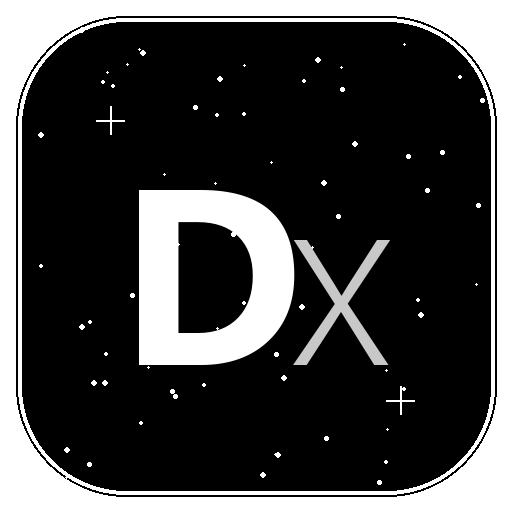

DATEX
LaTeX writing studio
Datex
Professional LaTeX writing studio
+ New Project
✦ Build with AI
Open Folder
Import ZIP
Word to LaTeX
Join Live Session
Clone from GitHub
TeX Packages
Settings
Project
Location
Last modified
No projects yet. Create your first one from a template.
⌂
Auto
Built-in (Datex TeX)
pdfLaTeX
XeLaTeX
LuaLaTeX
▶ Recompile
Auto
Chapter only
W
Word ▾
Review
Comments
History
References
AI
Σ
Search
Git
◫ Layout
Share
Help
⚙
✦
Build
Ready
Developed by
Datix AI
&
XactGen AI
Logs
⇨ PDF
−
Fit width
75%
100%
125%
150%
200%
+
⇩
Compile to see your PDF here.
Double-click the PDF to jump to the source.
Errors and warnings
Raw log
Ask AI to fix
Exit focus mode